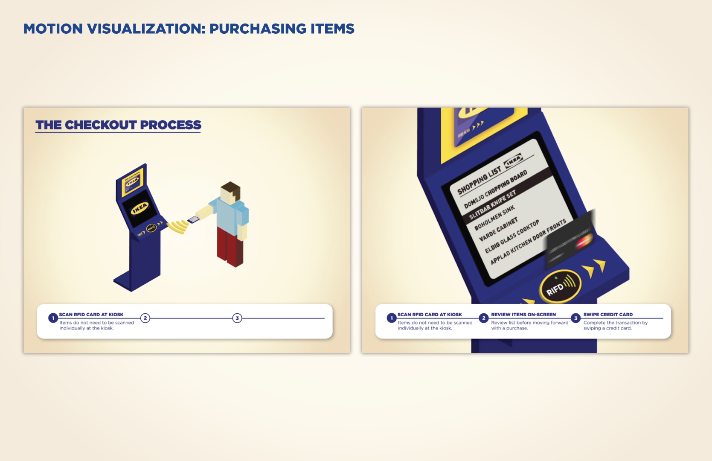
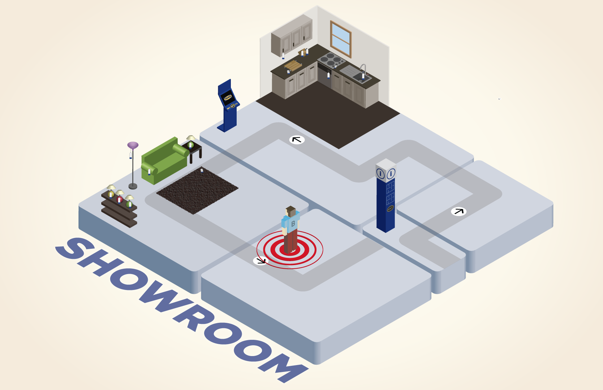
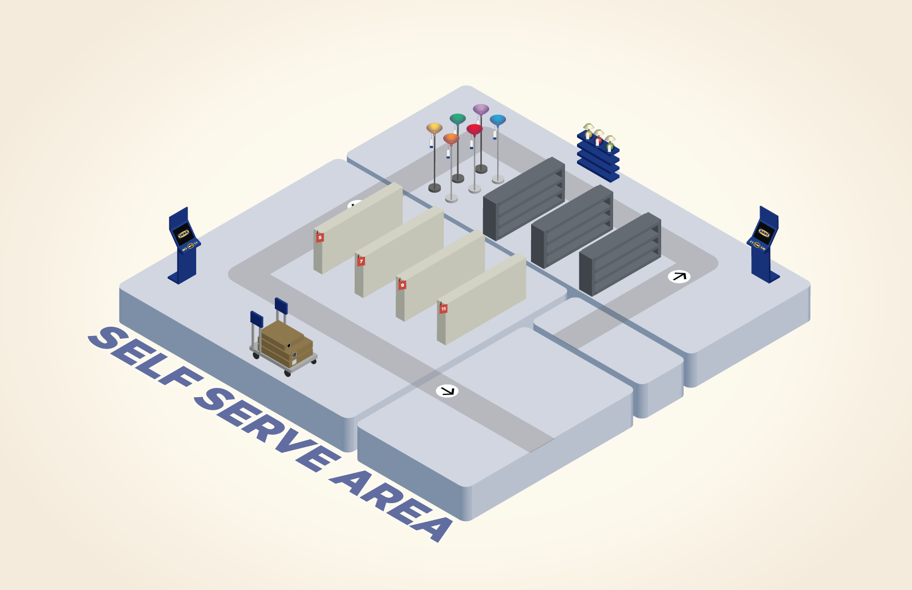
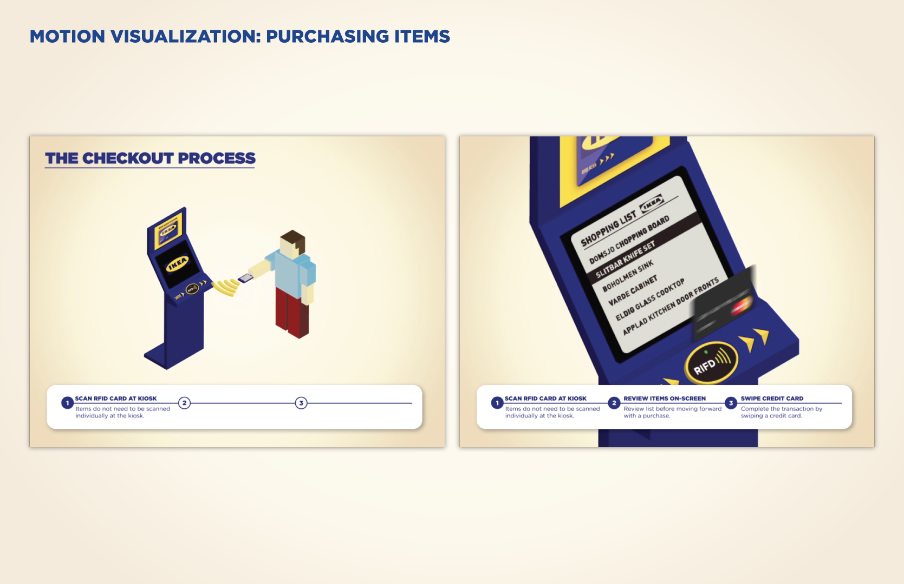
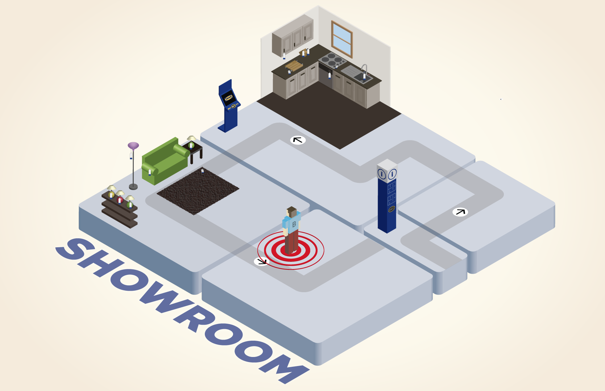
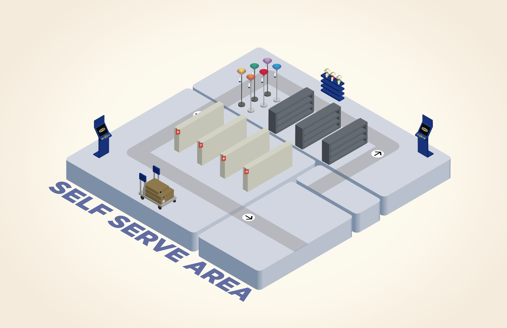

Spacial Analysis


This presentation hows our observations of the current shopping experience and calls out suggestions for improvement.
This project rethinks the IKEA shopping experience with an RFID shopping list and improved in-store navigation. This was a collaborative project with classmate Matt Denzer.
We started our process by visiting IKEA to evaluate the current shopping experience. The wayfinding signage, style options, and product tags are well-designed and easy to locate.
We isolated several areas for improvement including the maps, price check stations, room design kiosks, and self-serve warehouse process.
This presentation hows our observations of the current shopping experience and calls out suggestions for improvement.
 





In the re-imagined experience, shoppers use RFID scanners to create a list of items they’d like to purchase. They can quickly add and remove items to the device and use kiosks throughout the store to compare the products they've scanned.
When shoppers arrive in the self-serve warehouse, the scanner changes to a wayfinding device that points to the exact location of each item on the list.
Once all of the items are checked off, the device transfers the list of items in the cart to the checkout kiosks. Customers and employees don't have to scan each again.